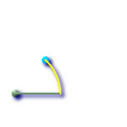
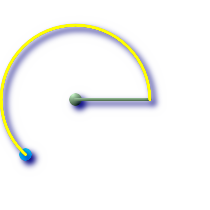

ST_Azimuth — Returns the angle in radians from the horizontal of the vector defined by pointA and pointB. Angle is computed clockwise from down-to-up: on the clock: 12=0; 3=PI/2; 6=PI; 9=3PI/2.
float ST_Azimuth(geometry pointA, geometry pointB);
float ST_Azimuth(geography pointA, geography pointB);
Returns the azimuth of the segment defined by the given Point geometries, or NULL if the two points are coincident. Return value is in radians. Angle is computed clockwise from down-to-up: on the clock: 12=0; 3=PI/2; 6=PI; 9=3PI/2
The Azimuth is mathematical concept defined as the angle, in this case measured in radian, between a reference plane and a point.
Availability: 1.1.0
Enhanced: 2.0.0 support for geography was introduced.
Azimuth is especially useful in conjunction with ST_Translate for shifting an object along its perpendicular axis. See upgis_lineshift Plpgsqlfunctions PostGIS wiki section for example of this.
Geometry Azimuth in degrees
SELECT ST_Azimuth(ST_Point(25,45), ST_Point(75,100))/(2*pi())*360 as degAz,
ST_Azimuth(ST_Point(75,100), ST_Point(25,45))/(2*pi())*360 As degAzrev;
-- NOTE easier to remember syntax using PostgreSQL built-in degrees function --
-- Both yield same answer --
SELECT degrees( ST_Azimuth(ST_Point(25,45), ST_Point(75,100)) ) as degAz,
degrees( ST_Azimuth(ST_Point(75,100), ST_Point(25,45)) ) As degAzrev;
degaz | degazrev
------------------+------------------
42.2736890060937 | 222.273689006094
 degAz is path to travel (azimuth), horizontal line (which starts at the start point and ends where we want the end point to fall) and points (start point: 25,45 is in green)
|  degAzrev is azimuth curve shown, horizontal line (which starts at the start point and ends where we want the end point to fall) and points (start point: 75,100 is in green)
|